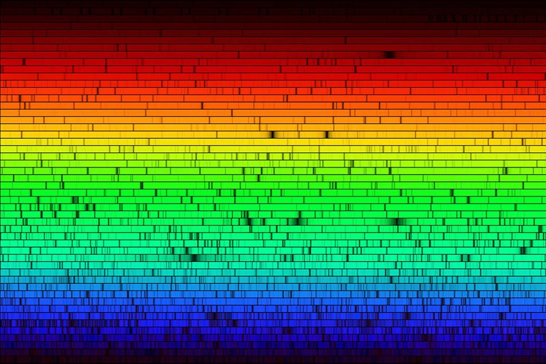
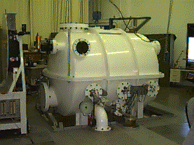

Atlas Info
Information about the atlas that produced the above plot. Source: README.txt that accompanies the visatl information.
An Atlas of the Spectrum of the Solar Photosphere
from 13,500 to 28,000 cm-1 (3570 to 7405A)
L. Wallace, K. Hinkle, and W. Livingston,
National Optical Astronomy Observatories.
The files collected here were made in conjunction with, and are intended to be used with, the hard copy of this atlas. The files with the prefixes "sp" contain the spectral data from which the plots were made. Each of these contains a 50 cm-1 region with a 3 cm-1 overlap on each end. Following the prefix "sp" is the lead frequency of the segment, e. g., "14150". For the region 13,500 to 20,000 cm-1, the four columns of each file contain, first the frequency, second the deduced telluric spectrum, third the observed photospheric spectrum before correction for telluric absorption, and fourth the photospheric spectrum corrected for telluric absorption. The region 20,000 to 28,000 cm-1 contains no sensible narrow-line telluric absorbers and consequently the files contain only the frequencies and the observed spectrum. The required multiplicative factors to correct the observed frequencies to the laboratory scale are 1.0000013 for 13,500 to 16,000 cm-1, 0.9999981 for 16,000 to 20,000 cm-1, and 1.0000018 for 20,000 to 28,000 cm-1.
The remaining files are encapsulated post-script files, one per atlas page. The prefix "ph" indicates the corrected photospheric spectra in Section II of the atlas. The "tr" files are the Section III pages giving atmospheric transmission and the observed photospheric spectra. Finally, "cph" and "ctr" are the compressed photospheric and transmission plots of Section I.
FTS Backgrounder
The Fourier Transform Spectrometer was built between 1971 and 1976. A high-resolution spectrometer, the FTS measured the intensity of light at the National Science Foundation McMath-Pierce Solar Telescope at Kitt Peak in Arizona.
One of the most visible products of this instrument is a reconstruction of the Sun's spectrum; a rainbow of light speckled with black absorption lines representing indications of elements within the Sun's light.
The name for the instrument came from the math used to reconstruct the spectrum from interference patterns. A special carriage slides the FTS's optics along a finely polished granite table. This entire assembly is enclosed in a vacuum chamber constantly measured by lasers to ensure precision.
The detailed spectrum the instrument has provided aids not only scientists studying our own Sun but can be used to help model processes of faraway stars.
FTS Downloads
Transformed spectra from the Fourier Transform Spectrometer obtained at the McMath-Pierce Facility from March 31, 1976, to September 6, 1996. The physical sources of these spectra include the sun, planets, stars, the terrestrial atmosphere, and laboratory sources. The spectral range of each observation lies somewhere between 220 and 18,000 nm.
Seven solar spectral atlases from the FTS. You can access the FTS spectral atlases via direct anonymous FTP.

The National Solar Observatory (NSO) is the national center for ground-based solar physics in the United States (www.nso.edu) and is operated by the Association of Universities for Research in Astronomy (AURA) under a cooperative agreement with the National Science Foundation Division of Astronomical Sciences.
The National Science Foundation (NSF) is an independent federal agency created by Congress in 1950 to promote the progress of science. NSF supports basic research and people to create knowledge that transforms the future. Please refer to www.nsf.gov.